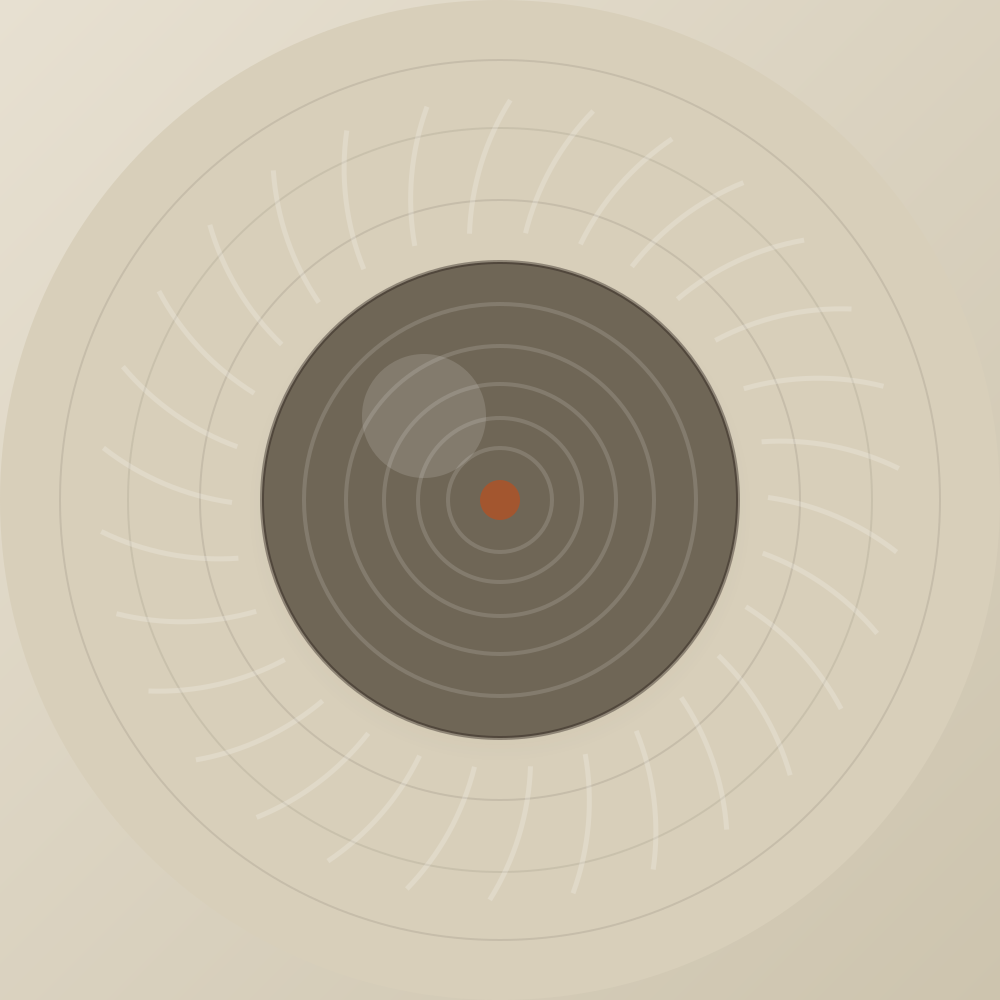
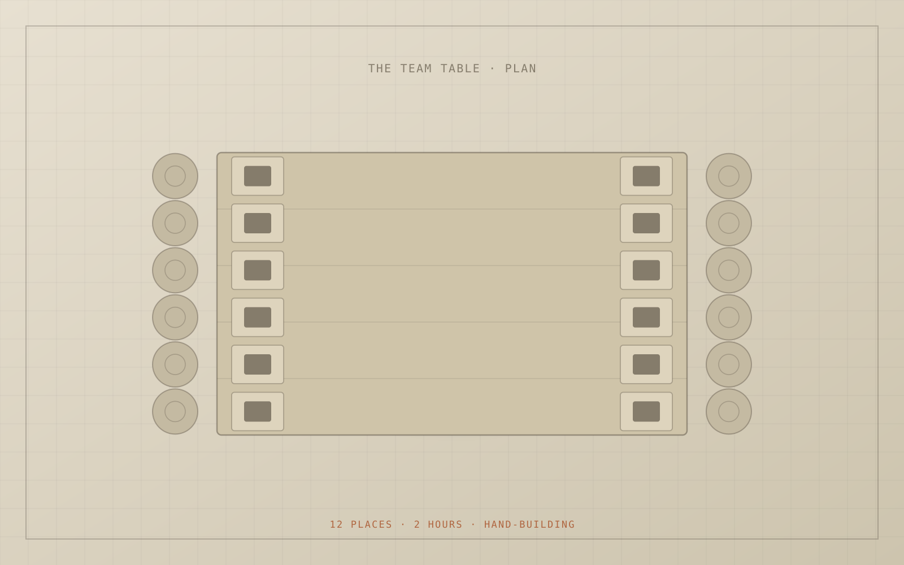
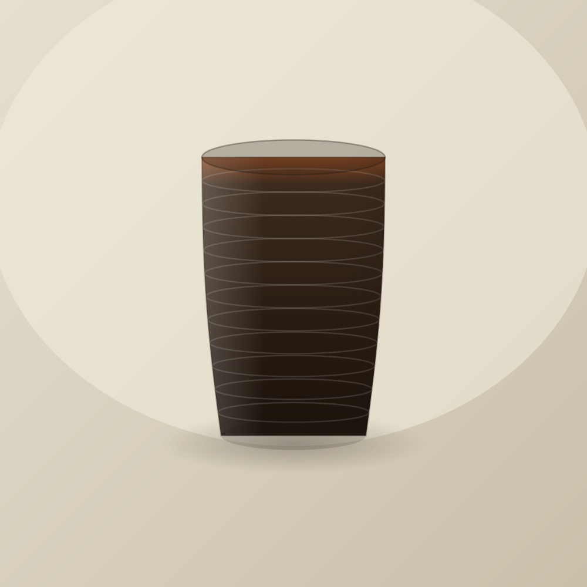
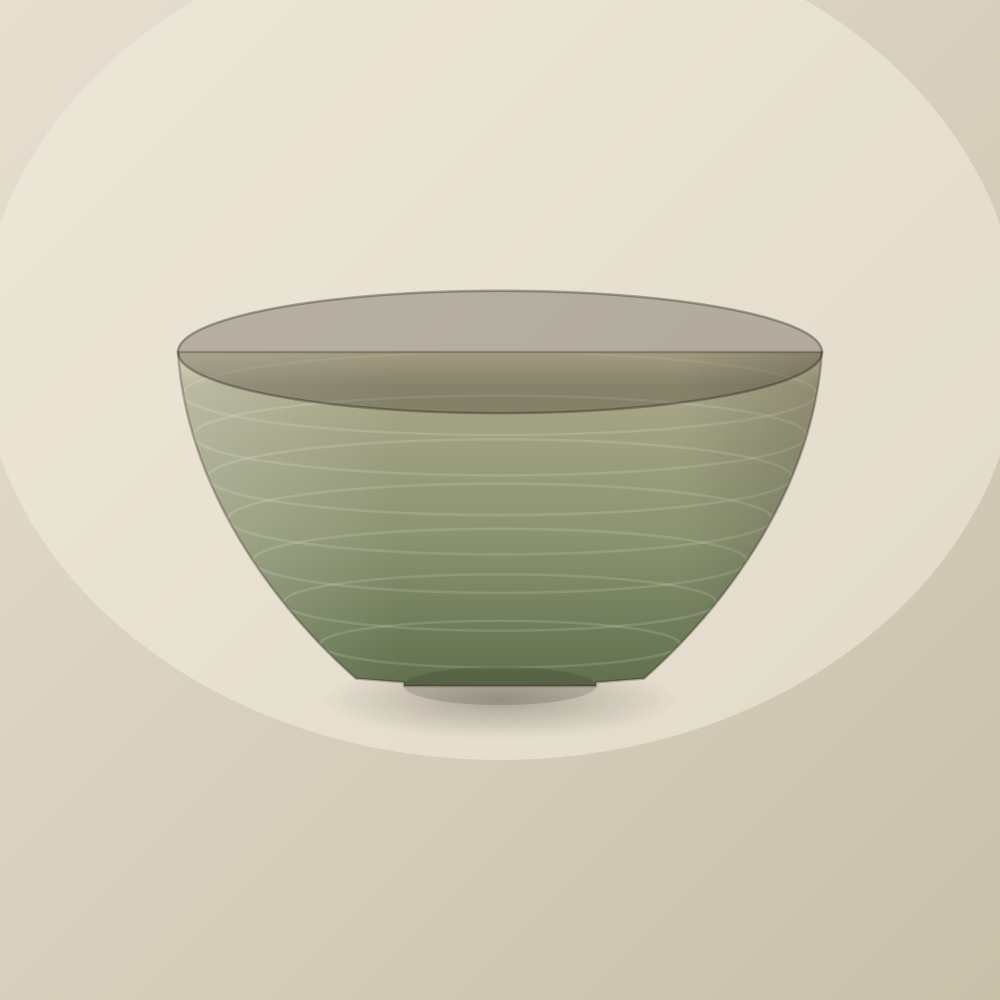
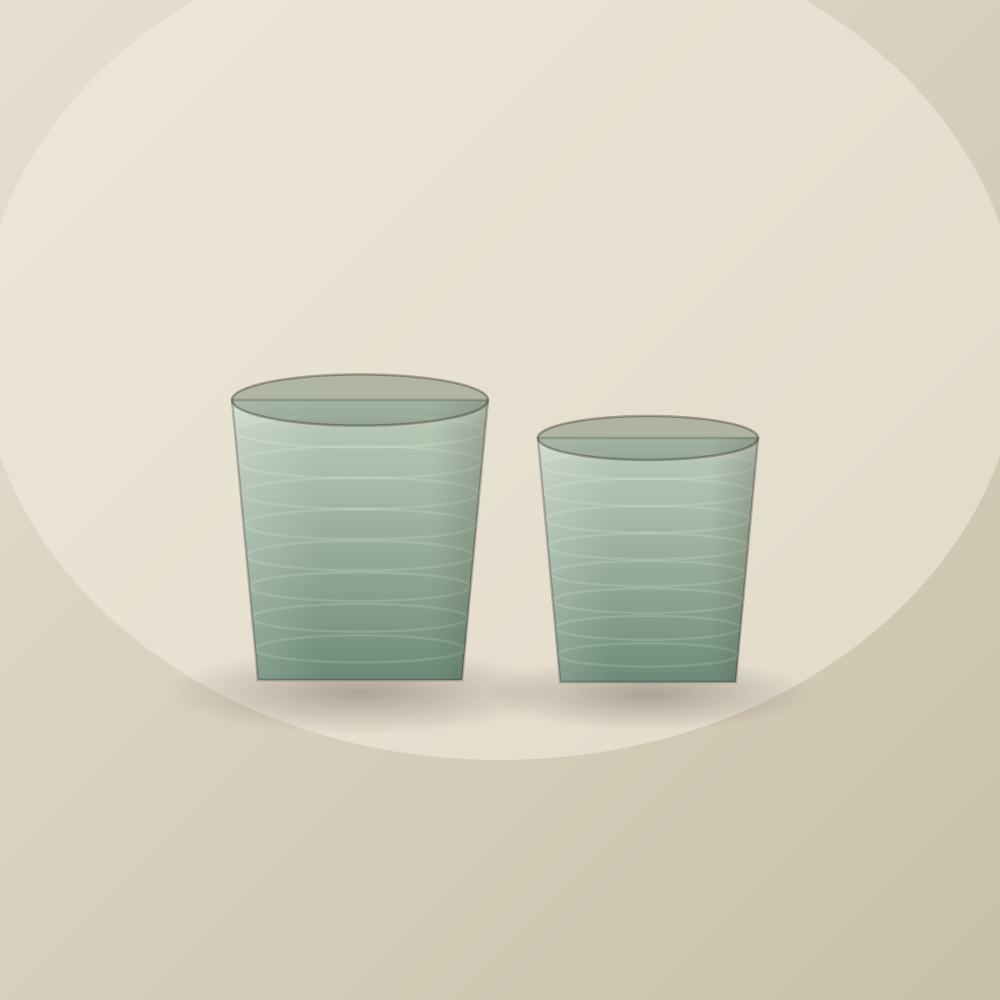
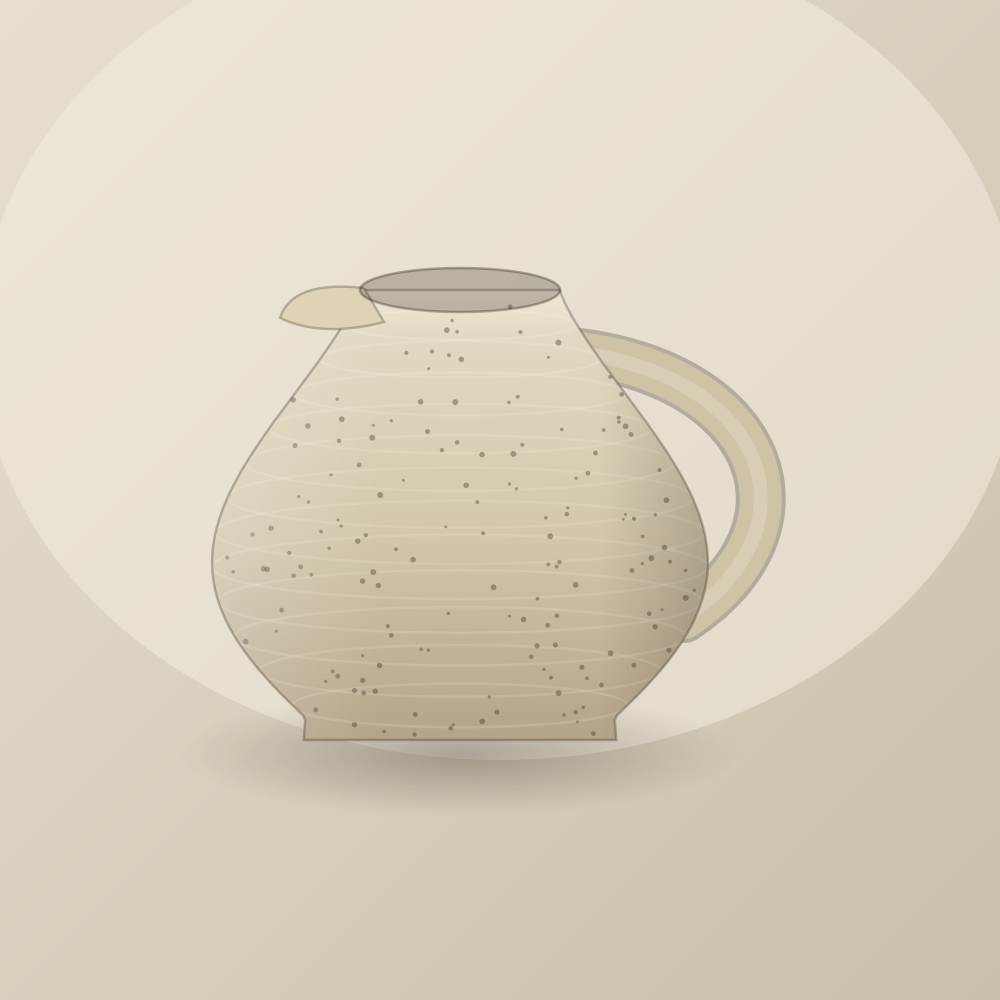

Solo pottery session
Two hours, one wheel, one instructor between every three people. You will throw four or five pots and keep the two you like.
₹1,800 per person · 2 hours
Cooke Town, Bengaluru · since 2021
The Earthen Studio is a wheel-throwing pottery studio. Come on your own, bring one person, or bring nine. Two hours with your hands in clay, everything glazed and fired by us, your pots ready to collect three weeks later.

Three ways to sit down
Every pottery session includes clay, tools, an apron that will not survive, glazing, and both firings. No experience assumed. Most people have never touched a wheel.
Two hours, one wheel, one instructor between every three people. You will throw four or five pots and keep the two you like.
₹1,800 per person · 2 hours
Wheels side by side, one bat each, and a table at the end to sit and look at what you made. Popular for anniversaries, unpopular with anyone in a white shirt.
₹3,400 for two · 2.5 hours
Four to ten people. Half the session at the wheel, half hand-building at the long table, so nobody is standing around waiting.
₹1,650 per person · 3 hours
What happens to your pot
The order matters and none of it can be rushed. This is why your pots go home weeks after you do.
Air pockets are knocked out of the clay. A trapped bubble becomes an explosion at 1000°C.
The hardest twenty minutes of the day. Everything after this is easy by comparison.
Walls rise between two fingers. Too fast and it collapses, and that is fine, you start again.
Four days later, leather-hard, we turn a foot into the base and stamp it.
Cone 06, roughly 1000°C, twelve hours up and eighteen hours cooling.
Cone 6, 1222°C. Glass forms on the surface. This is where the colour arrives.

For companies
We run corporate pottery workshops for teams of eight to forty. Half-day offsites, quarterly team tables, and client gifting runs where every piece carries your stamp on the base.
From ₹2,400 per person · minimum 8 · delivered to your office
From the shelf
Thrown by the studio, glazed in small batches. No two are identical and the variation is the point, not a defect.

₹950

₹2,600

₹1,750

₹2,200